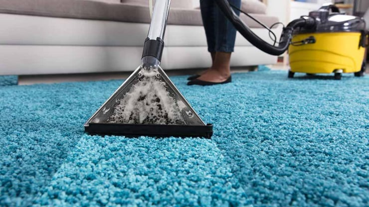
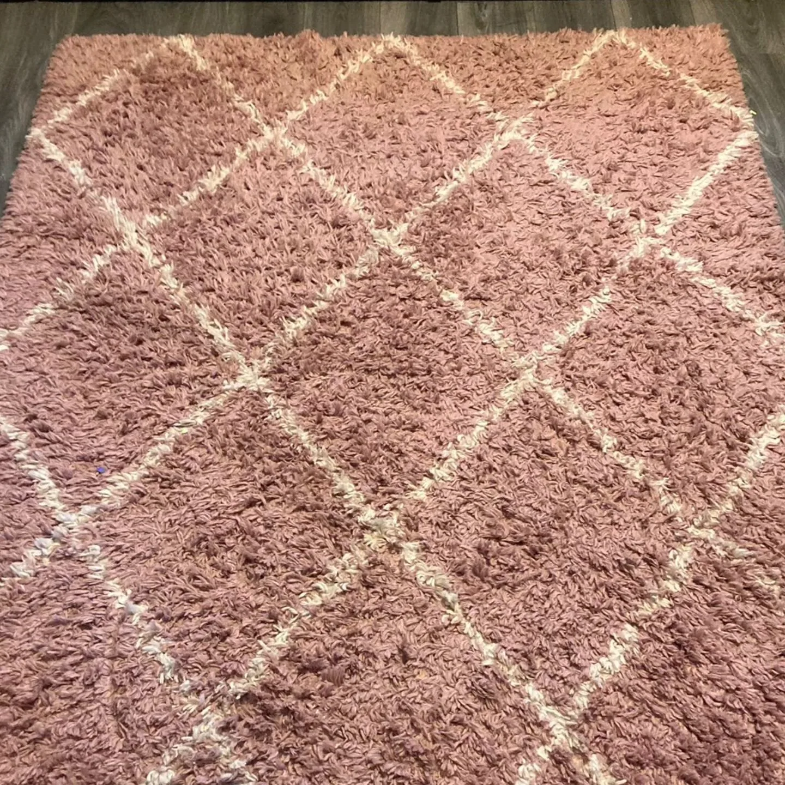
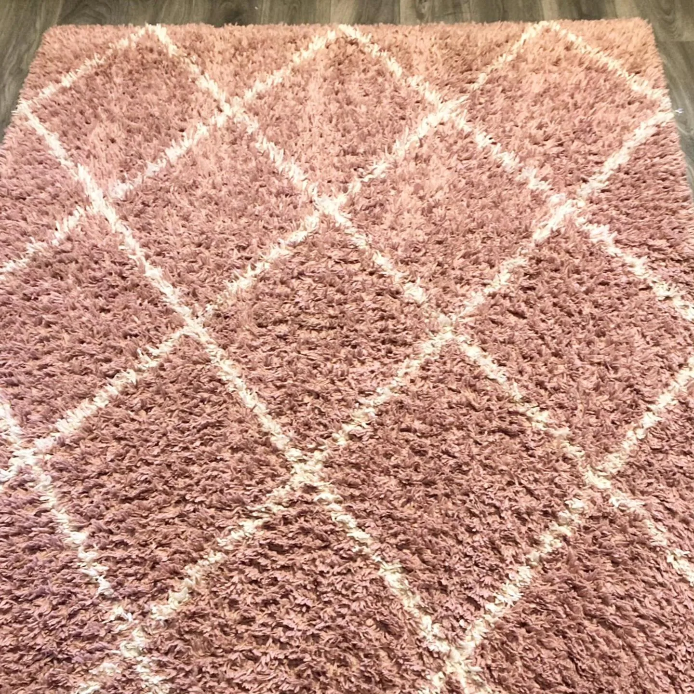
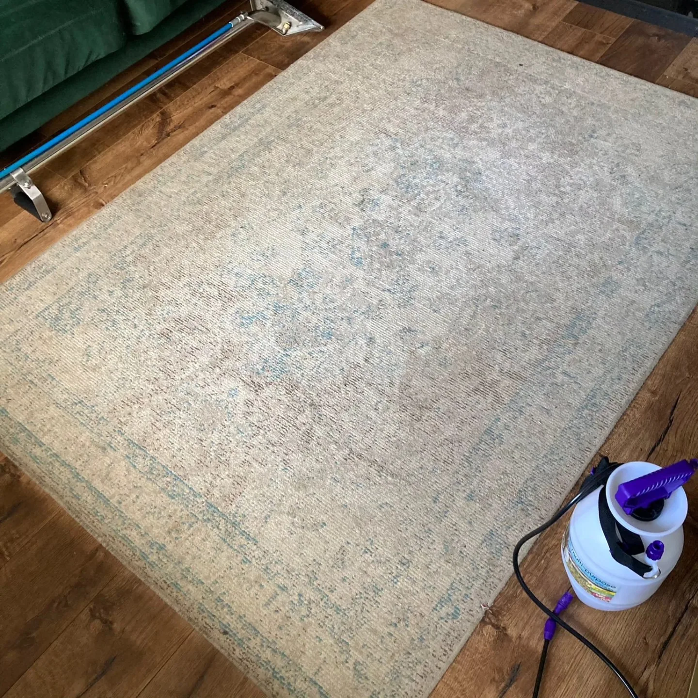
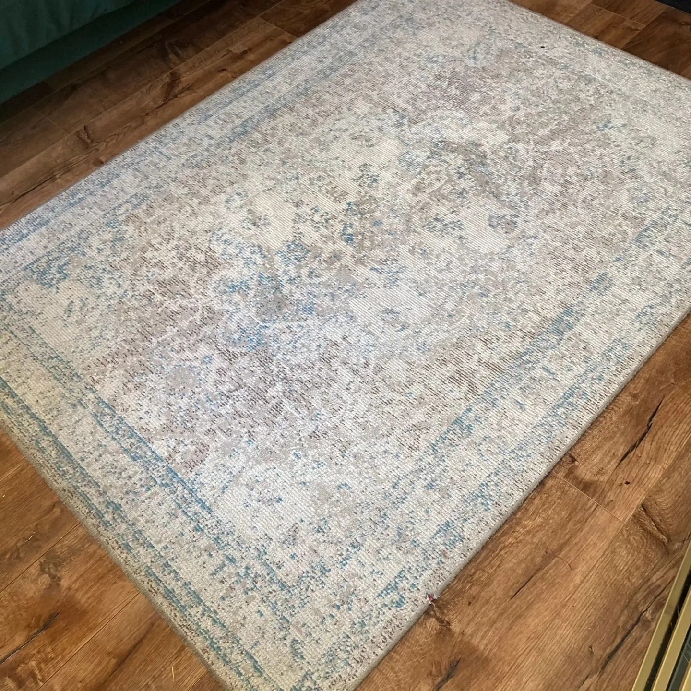
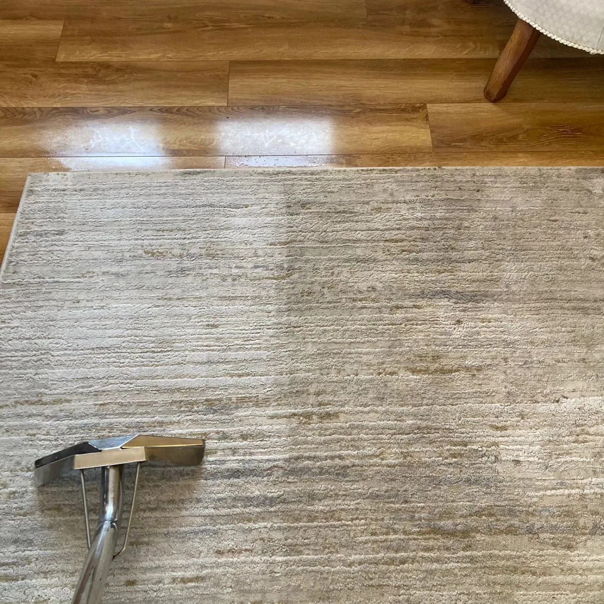
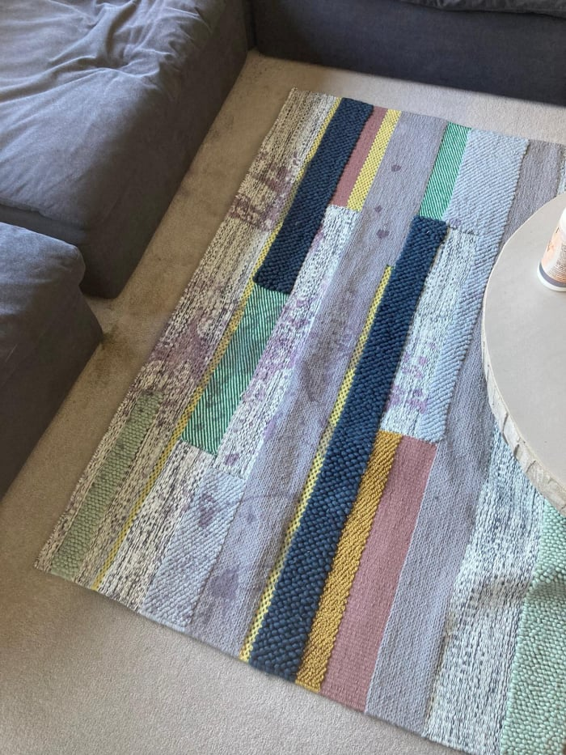

Expert care for every rug — delicate oriental, wool, synthetic and modern area rugs.
A well-kept rug can be the showpiece of a room — but it also traps a decade’s worth of foot traffic, pet hair, spills and allergens in its pile. Our rug steam cleaning lifts all of that out, brightens colours and restores the feel underfoot without risking the fibres.
We test colour-fastness on a corner first, adjust heat and detergent to the fibre type, and use powerful extraction so the rug dries quickly and evenly. Whether it’s a delicate antique, a hand-woven oriental piece, a wool rug or a modern synthetic, we treat each one with the care it deserves. Pet-odour removal and colour restoration are our specialities.

Real results from our rug cleaning service




Before & After

Expert care for every rug in your home
Delicate hand-woven treasures treated with special care.
Preserving the intricate patterns and vibrant colours.
Modern synthetic and natural fibre rugs refreshed.
Gentle cleaning that protects natural wool fibres.
Sisal, jute, and seagrass rugs carefully cleaned.
Deep cleaning for high-pile rugs and shag carpets.

The questions our customers ask most often
Free, no-obligation quote — we reply same day. Serving Laois, Kildare, Carlow, Kilkenny, Tipperary, Offaly & Westmeath.